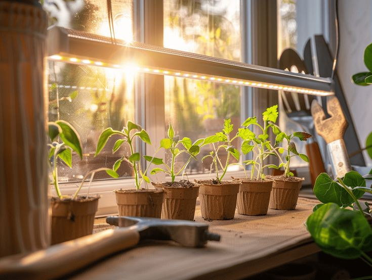
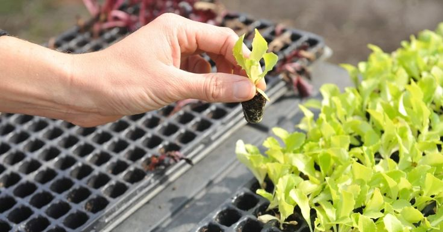
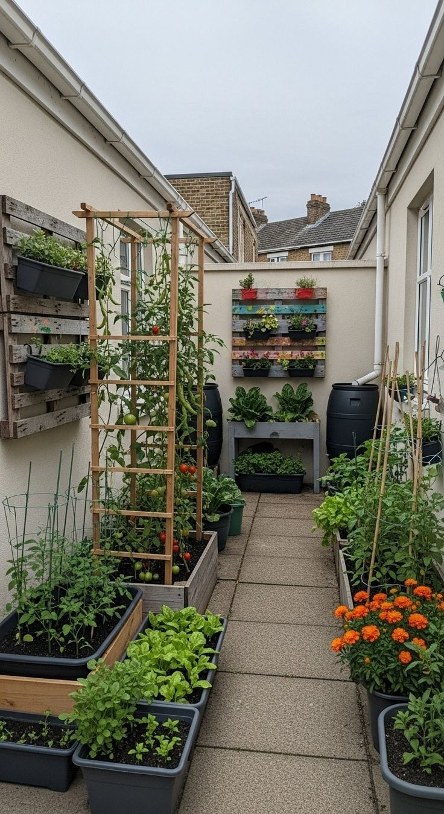
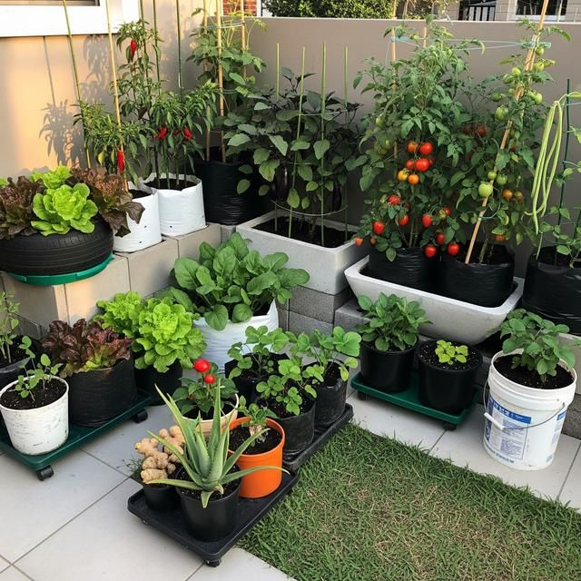
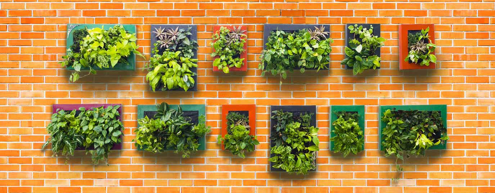
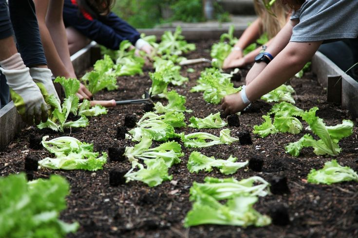
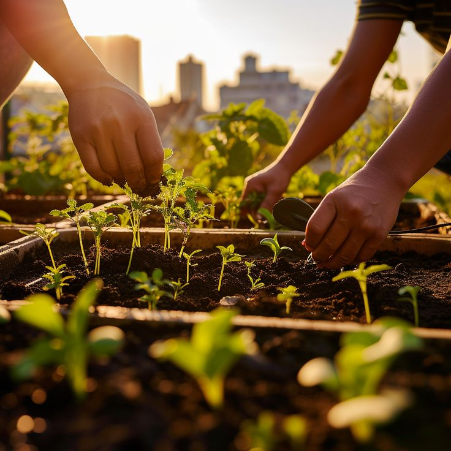
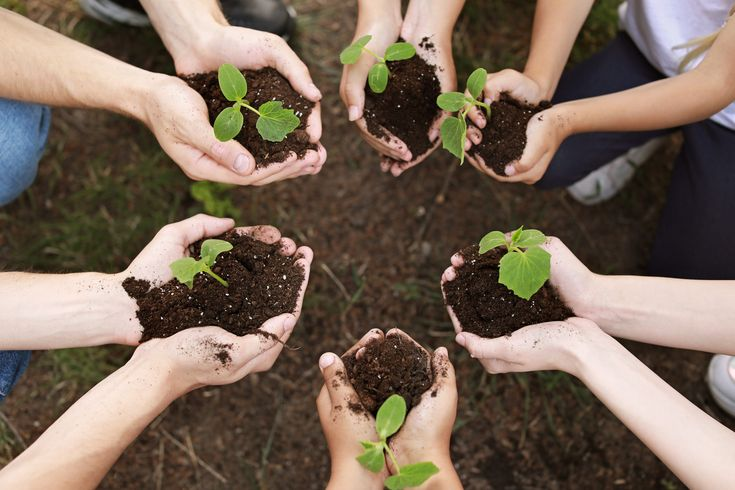
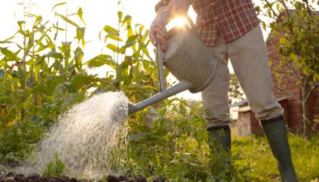
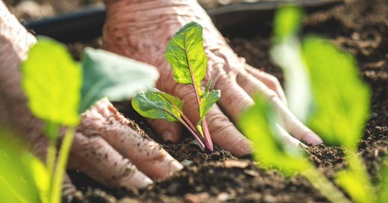

Guía completa: Cómo hacer un huerto urbano en casa
Aprende paso a paso cómo crear un huerto urbano desde cero, incluyendo luz, recipientes, sustrato, riego y cuidados 🌱
1. Luz solar


La luz solar es uno de los factores más importantes en un huerto urbano, ya que permite que las plantas realicen la fotosíntesis, proceso con el cual obtienen energía para crecer y desarrollarse. Sin una buena exposición a la luz, las plantas pueden debilitarse, crecer lentamente o incluso dejar de producir frutos.
✔ Tipos de plantas según luz:
- 🌞 Plantas de sol directo (6 a 8 horas): tomate, chile, pepino, sandía
- 🌤️ Plantas de semisombra (4 a 6 horas): lechuga, espinaca, perejil
⚠️ Desventajas de una mala iluminación:
- Hojas amarillas o débiles
- Crecimiento lento
- Baja producción de frutos
- Plantas más vulnerables a plagas
2. Recipientes



Puedes usar macetas, botellas recicladas, cubetas o cajas de madera. Lo importante es que tengan drenaje para el agua.
- Macetas de barro o cerámica (mantienen mejor la humedad y permiten ventilación)
- Cubetas o baldes de plástico (económicos y fáciles de conseguir)
- Botellas de plástico recicladas (ideales para espacios pequeños o verticales)
- Cajas de madera (dan buen espacio para raíces profundas)
- Envases grandes reutilizados (como garrafones cortados)
- Canastas o cestos forrados con plástico (opción decorativa)
- Jardineras para ventanas o balcones (perfectas para espacios reducidos)
💡 Recomendación importante:
Es mejor elegir recipientes que tengan buena profundidad si vas a sembrar plantas como tomate o zanahoria, ya que necesitan espacio para desarrollar sus raíces correctamente. Para plantas pequeñas como lechuga o albahaca, pueden usarse recipientes más bajos.
⚠️ Desventaja:
Sin agujeros de drenaje, las raíces pueden pudrirse. Cuando un recipiente no tiene salida para el exceso de agua, el agua se acumula en la parte inferior de la maceta. Esto hace que la tierra se mantenga demasiado húmeda por mucho tiempo, lo que puede provocar que las raíces de las plantas se asfixien y comiencen a pudrirse. Además, esta humedad excesiva favorece la aparición de hongos y plagas, lo cual puede debilitar la planta e incluso hacer que deje de crecer correctamente o se muera. Por eso es importante que cualquier maceta o recipiente tenga orificios en la base para permitir un buen drenaje del agua.
3. Sustrato (tierra)



El sustrato es el medio donde las plantas desarrollan sus raíces. No es solo tierra, sino una mezcla de materiales que permiten retener nutrientes, aire y agua. Un buen sustrato es clave para un crecimiento saludable.
✔ Componentes del sustrato:
- 🌿 Tierra negra: base principal rica en minerales
- 🍂 Compost: aporta nutrientes orgánicos
- 🪨 Arena o perlita: mejora el drenaje
- 🥥 Fibra de coco: retiene humedad sin encharcar
Mezcla recomendada:
Una mezcla equilibrada puede ser: 50% tierra negra, 30% compost y 20% material de aireación.
⚠️ Problemas de un mal sustrato:
- Agua estancada
- Raíces podridas
- Crecimiento débil
- Falta de nutrientes
4. Semillas y plantas
Las semillas representan el inicio del huerto urbano. Elegir correctamente qué plantar depende del clima, la luz disponible y la estación del año.
✔ Cultivos por estación:
- 🌸 Primavera: tomate, fresa, albahaca, pepino, chile, zanahoria
- 🌞 Verano: sandía, melón, maíz, pimiento, berenjena
- 🍂 Otoño: espinaca, brócoli, cebolla, lechuga, zanahoria
- ❄️ Invierno: ajo, cebolla, col, rábano, perejil
💡 Recomendaciones:
- Usar semillas de buena calidad
- Respetar la temporada de siembra
- No sembrar demasiado juntas las plantas
- Revisar el tiempo de germinación de cada especie
5. Herramientas básicas
Para iniciar un huerto urbano no se necesitan herramientas costosas. Con lo básico es suficiente para preparar la tierra, sembrar y cuidar las plantas.
✔ Herramientas necesarias:
- 🪴 Pala pequeña para tierra
- 💧 Regadera o botella perforada
- ✂️ Tijeras de poda
- 🧤 Guantes de jardinería
- 📏 Palitos o etiquetas para identificar plantas
💡 Ventajas:
- Son económicas
- Fáciles de conseguir
- Reutilizables
6. Riego

El riego es uno de los cuidados más importantes en un huerto urbano. Debe ser equilibrado, ya que tanto el exceso como la falta de agua pueden afectar el desarrollo de las plantas.
✔ Frecuencia de riego:
- 🌞 Clima caliente: 1–2 veces al día
- 🌤️ Clima templado: cada 2 días
- ❄️ Clima frío: 1–2 veces por semana
⚠️ Errores comunes:
- Regar en exceso
- No revisar la humedad de la tierra
- Regar en horas de mucho sol
7. Abono
El abono es esencial para enriquecer el suelo y proporcionar nutrientes que las plantas necesitan para crecer fuertes y producir más.
✔ Tipos de abono:
- 🍂 Compost casero
- 🐄 Estiércol bien descompuesto
- 🧪 Fertilizantes orgánicos líquidos
💡 Recomendaciones:
- Aplicar cada 2 a 4 semanas
- No exceder la cantidad
- Mezclar bien con el sustrato
8. Tratamientos y plagas

Las plantas pueden verse afectadas por plagas o enfermedades, por lo que es importante prevenir y actuar a tiempo para evitar daños mayores.
✔ Plagas comunes:
- 🐜 Pulgones
- 🐛 Orugas
- 🍄 Hongos
✔ Tratamientos naturales:
- 🧄 Agua con ajo como repelente
- 🧼 Jabón neutro diluido
- 🌿 Limpieza constante de hojas
💡 Prevención:
- Revisar plantas cada semana
- Evitar exceso de humedad
- Mantener buena ventilación